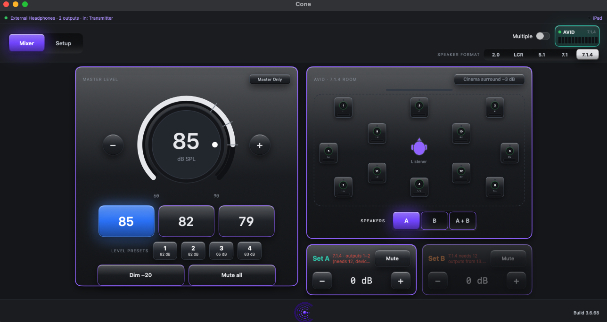
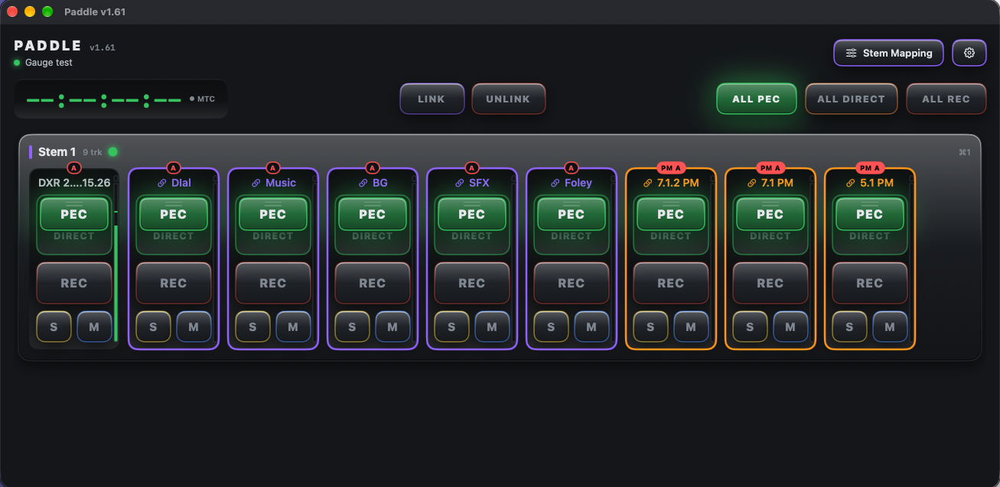
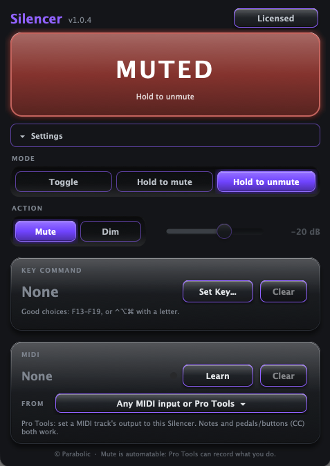
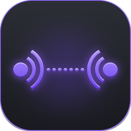
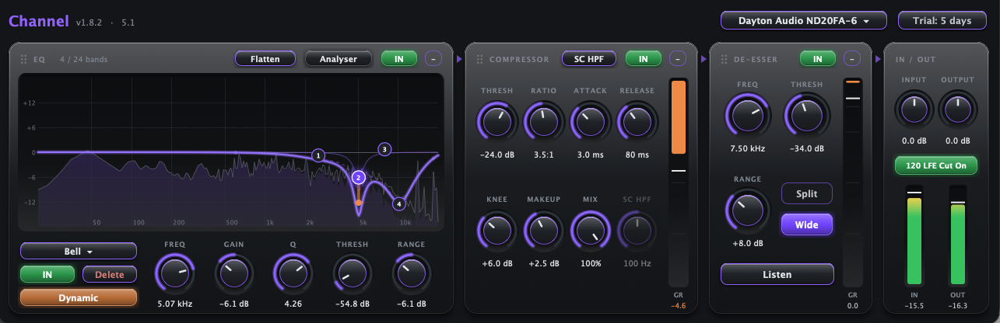
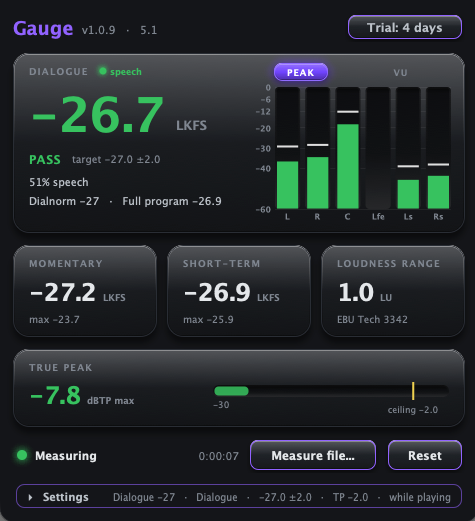

Mac app
Cone

Calibrate and control speaker systems from 2.0 up to 7.1.4, with a simple interface, powerful processing and a dedicated iPad remote.
macOS 13 Ventura or later · Apple silicon or Intel

Calibrate and control speaker systems from 2.0 up to 7.1.4, with a simple interface, powerful processing and a dedicated iPad remote.

Arming and input/output switching for Pro Tools, with routing of arming to one or many print master tracks.

Route named audio outputs to external apps without aux I/Os, and return audio from external apps with as many channels as you need.

Mute or dim a track from a keystroke or MIDI command, with latch or momentary modes and toggle and reverse combinations.

Send audio between computers over a local network with low latency. Includes a Receiver app for systems without Pro Tools.

A complete processing chain for Pro Tools in a single insert: EQ, compressor and de-esser, tuned for dialogue and post.

Integrated loudness, true peak and short-term levels, right on the track.
All apps and plug-ins run on macOS 13 Ventura or later, on Apple silicon or Intel Macs. Plug-ins are AAX for Pro Tools.
Each app has its own support page — use the Support button on its page. Or email lew@parabolicny.com with your macOS version, the app version and what happened.
DRAFT — Lewis to confirm: Lew's Apps don't collect personal data, use analytics or show ads. Apps that use the network talk only to your own computers and devices. This website doesn't use cookies or tracking.